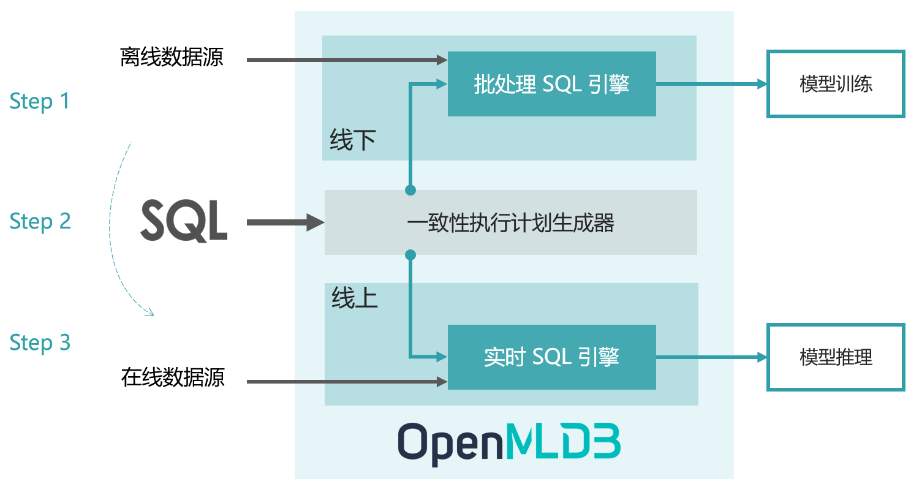

简介
Contents

简介#
OpenMLDB 是一个开源机器学习数据库，提供线上线下一致的生产级特征平台。#
1. 设计理念#
在人工智能工程化落地过程中，企业的数据和工程化团队 95% 的时间精力会被数据处理、数据校验等相关工作所消耗。为了解决该痛点，头部企业会花费上千小时自研构建数据与特征平台，来解决诸如线上线下一致性、数据穿越、特征回填、高并发低延迟等工程挑战；其他中小企业则需要采购高昂的 SaaS 工具和数据治理服务。
OpenMLDB 致力于解决 AI 工程化落地的数据治理难题，并且已经在上百个企业级人工智能场景中得到落地。OpenMLDB 优先开源了特征数据治理能力，依托 SQL 的开发能力，为企业级机器学习应用提供线上线下计算一致、高性能低门槛的生产级特征平台。
2. 生产级机器学习特征平台#
在机器学习的很多应用场景中，为了获得高业务价值的模型，对于实时特征有很强的需求，比如实时的个性化推荐、风控、反欺诈等。但是，由数据科学家所构建的特征计算脚本（一般基于 Python 开发），由于无法满足低延迟、高吞吐、高可用等生产级特性，因此无法直接上线。为了在生产环境中上线特征脚本用于模型推理，并且满足实时计算的性能要求，往往需要工程化团队进行代码重构和优化。那么，由于两个团队、两套系统参与了从离线开发到部署上线的全流程，线上线下一致性校验成为一个必不可少的步骤，其往往需要耗费大量的沟通成本、开发成本，和测试成本。
OpenMLDB 的整体架构设计是为了达到特征平台从开发到部署的流程优化目标：开发即上线 ，以此来大幅降低人工智能的落地成本。其完成从特征的离线开发到上线部署，只需要三个步骤：
步骤一：使用 SQL 进行离线特征脚本开发，用于模型训练
步骤二：SQL 特征脚本一键部署上线，由线下模式切换为线上模式
步骤三：接入实时数据，进行线上实时特征计算，用于模型推理

为了可以达到开发即上线的优化目标，OpenMLDB 的架构基于线上线下一致性的理念所设计。上图显示了 OpenMLDB 的抽象架构，包含了四个重要的设计组件：（1）统一的 SQL 编程语言；（2）具备毫秒级延迟的高性能实时 SQL 引擎；（3）基于 OpenMLDB Spark 发行版的批处理 SQL 引擎；（4）串联实时和批处理 SQL 引擎，保证线上线下一致性的一致性执行计划生成器。
关于 OpenMLDB 的设计核心理念和详细架构，请参考我们的开发团队博客 - 实时特征计算平台架构方法论和实践。
3. 核心特性#
线上线下一致性： 离线和实时特征计算引擎使用统一的执行计划生成器，线上线下计算一致性得到了天然的保证。
毫秒级超低延迟的实时 SQL 引擎：线上实时 SQL 引擎基于完全自研的高性能时序数据库，对于实时特征计算可以达到毫秒级别的延迟，性能远超出流行商业内存数据库（Figures 9 & 10 of the VLDB 2021 paper ），充分满足高并发、低延迟的实时计算性能需求。
基于 SQL 定义特征： 基于 SQL 进行特征定义和管理，并且针对特征计算，对标准 SQL 进行了增强，引入了诸如
LAST JOIN和WINDOW UNION等定制化语法和功能扩充。生产级特性： 为大规模企业应用而设计，整合诸多生产级特性，包括分布式存储和计算、灾备恢复、高可用、可无缝扩缩容、可平滑升级、可监控、异构内存架构支持等。
4. FAQ#
主要使用场景是什么？
目前主要面向人工智能应用，提供高效的线上线下一致性的特征平台，特别针对实时特征需求做了深度优化，达到毫秒级的计算延迟。此外，OpenMLDB 本身也包含了一个高效且功能完备的时序数据库，使用于金融、IoT、数据标注等领域。
OpenMLDB 是如何发展起来的？
OpenMLDB 起源于领先的人工智能平台提供商第四范式的商业软件。其研发团队在 2021 年将商业产品中作为特征工程的核心组件进行了抽象、增强、以及社区友好化，将它们形成了一个系统的开源产品，以帮助更多的企业低成本实现人工智能转型。在开源之前，OpenMLDB 已经作为第四范式的商业化组件之一在上百个场景中得到了部署和上线。
OpenMLDB 是否是一个 feature store？
OpenMLDB 认为是目前普遍定义的 feature store 类产品的一个超集。除了可以同时在线下和线上供给正确的特征以外，其主要优势在于提供毫秒级的实时特征。我们看到，今天在市场上大部分的 feature store 是将离线异步计算好的特征同步到线上，但是并不具备毫秒级的实时特征计算能力。而保证线上线下一致性的高性能实时特征计算，正是 OpenMLDB 所擅长的场景。
OpenMLDB 为什么选择 SQL 作为开发语言？
SQL 具备表达语法简洁且功能强大的特点，选用 SQL 和数据库开发体验一方面降低开发门槛，另一方面更易于跨部门之间的协作和共享。此外，基于 OpenMLDB 的实践经验表明，经过优化过的 SQL 在特征计算的表达上功能完备，已经经历了长时间的实践考验。
5. 编译和安装#
6. QuickStart#
集群版和单机版
OpenMLDB 有两种部署模式：集群版（cluster version）和单机版（standalone vesion）。集群版适合于大规模数据的生产环境，提供了良好的可扩展性和高可用性；单机版适合于小数据场景或者试用目的，更加方便部署和使用。集群版和单机版在功能上完全一致，但是在某些具体功能上会有不同限制，详细参阅此篇说明文档。你可以选择合适的版本开始试用。
准备开始体验 OpenMLDB
7. 使用案例#
我们正在搜集一个 OpenMLDB 用于实际案例的列表，为 OpenMLDB 如何在你的业务中发挥价值提供参考。
应用 |
所用工具 |
简介 |
|---|---|---|
OpenMLDB, LightGBM |
这是个来自 Kaggle 的挑战，用于预测纽约市的出租车行程时间。你可以从这里阅读更多关于该应用场景的描述。本案例展示使用 OpenMLDB + LightGBM 的开源方案，快速搭建完整的机器学习应用。 |
|
使用 Pulsar connector 接入实时数据流 |
OpenMLDB, Pulsar, Pulsar OpenMLDB connector |
Apache Pulsar 是一个高性能的云原生的消息队列平台，基于其 Pulsar OpenMLDB connector，我们可以高效的将 Pulsar 的数据流作为 OpenMLDB 的在线数据源，实现两者的无缝整合。 |
8. OpenMLDB 文档#
9. Roadmap#
请参照我们公开的 Roadmap
此外，OpenMLDB 有一些规划中的重要功能演进，但是尚未具体排期，欢迎给我们任何反馈：
Cloud-native 版本
整合自动特征生成
基于异构存储和异构计算资源进行优化
轻量级 edge 版本
10. 社区开发者#
我们非常感谢来自社区的贡献。
如果你对于加入 OpenMLDB 开发者感兴趣，请在提交代码之前阅读我们的 Contribution Guideline 。
如果你是一位新加入的贡献者，你可以从我们的这个 good first issue 列表开始。
如果你是有一定的开发经验，可以查找 call-for-contributions 标签的 issues。
也可以阅读我们这个文档来了解不同层级的开发任务，参与和开发者讨论
为我们已有的社区贡献者鼓掌表示感谢：
11. 社区#
Email: contact@openmldb.ai
GitHub Issues 和 GitHub Discussions: 如果你是一个严肃的开发者，我们非常欢迎加入我们 GitHub 上的开发者社区，近距离参与我们的开发迭代。GitHub Issues 主要用来搜集 bugs 以及反馈新特性需求；GitHub Discussions 可以讨论任何和 OpenMLDB 相关的内容。
微信交流群：

12. 学术论文#
Cheng Chen, Jun Yang, Mian Lu, Taize Wang, Zhao Zheng, Yuqiang Chen, Wenyuan Dai, Bingsheng He, Weng-Fai Wong, Guoan Wu, Yuping Zhao, and Andy Rudoff. Optimizing in-memory database engine for AI-powered on-line decision augmentation using persistent memory. International Conference on Very Large Data Bases (VLDB) 2021.
13. 用户列表#
我们创建了一个用于搜集用户使用反馈意见的用户列表。我们非常感激我们的社区用户可以留下基于 OpenMLDB 的使用案例、意见、或者任何反馈。我们非常期待听到你的声音！